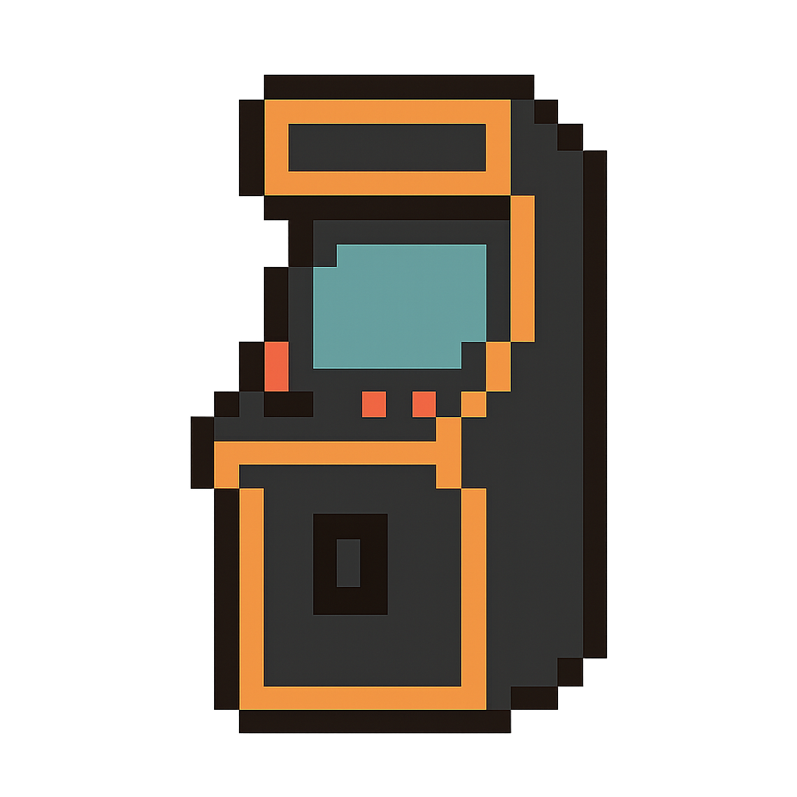

NEUROCADE
INSERT COIN
Welcome! Select a game below to start. Each game is designed to tax
certain cognitive skills more than others. They are meant to be fun but
also, in most cases, progressively challenging. Explore and test/develop
your skills!
Have fun and challenge yourself!
